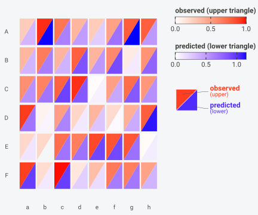
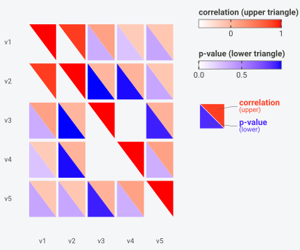
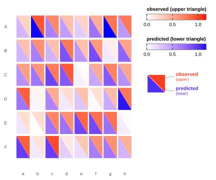
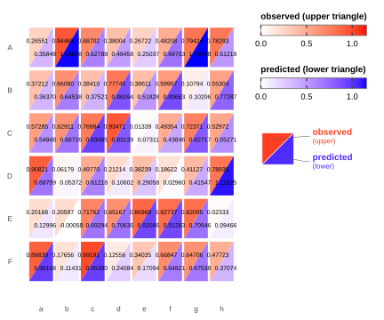
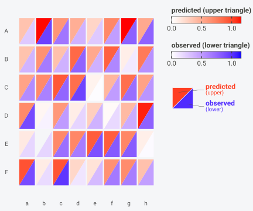
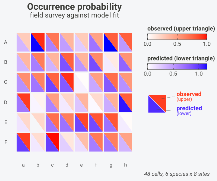
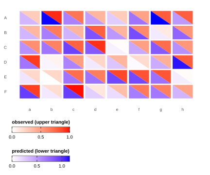

Two matrices, one plot
BiHeat draws a heatmap where every cell is cut along a diagonal. The upper triangle carries a value from one matrix, the lower triangle carries the value from the same position in a second matrix.
Here are species occurrence probabilities across sites, observed and predicted by some model:
set.seed(1)
species <- LETTERS[1:6]
sites <- letters[1:8]
observed <- matrix(runif(48), 6, 8, dimnames = list(species, sites))
predicted <- observed + matrix(rnorm(48, sd = 0.15), 6, 8,
dimnames = list(species, sites))
biheat(observed, predicted)
Each cell holds both numbers at once. A cell whose two halves are similarly pale, or similarly saturated, is a cell where the model agreed with the data. A cell with a deep half against a washed-out half is a cell where it did not. The comparison happens inside one cell, at the resolution of a single species at a single site, without the eye travelling between two panels.
The pairing generalises past observed and predicted. Mean and variance, correlation and p-value, train and test accuracy, model A and model B, richness before and after: any two numeric matrices sharing a shape are candidates.
Reading a split cell
Three things carry information in the panel, and it helps to know which one you are reading.
Within a single cell, the contrast between the two halves is the comparison. A cell whose halves differ sharply is a disagreement between the two matrices at that row and column. This is the reading the split makes cheap, because both values occupy one spot and the eye needs no saccade between panels.
Down a column or across a row, the variation within one triangle is the gradient of that matrix. The upper triangles of a row read as a small heatmap of their own, and so do the lower ones.
Across the two palettes, colour is a label rather than a quantity. Red and blue carry no relative meaning, so a saturated red half and a saturated blue half say that both values are high in their own matrix, not that they are equal.
That last point is where scale matters. Under the
default "separate", each triangle spans its own range, so
the halves of a cell cannot be compared as numbers, only as positions
within their own matrix. Under "shared" they span one range
and a visible mismatch inside a cell is a real numeric difference.
The diagonal direction changes which halves sit next to each other.
With split = "down" the upper triangles of horizontally
adjacent cells meet across the cell boundary, which favours reading
along rows. split = "up" favours reading down columns.
Neither changes the data, and switching between them is worth doing when
the panel is meant to support one direction of comparison.
biheat(observed, predicted, split = "up")
The clutch
biheat() renders in one call. Underneath it runs a
three-stage lifecycle that you can also drive yourself, and the object
in the middle of it carries more than the two matrices.
clutch <- breed(observed, predicted)
clutch
#> <clutch>
#> upper: observed (6 x 8)
#> lower: predicted (6 x 8)
#> align: intersect (6 rows x 8 cols kept)
#> cells: 48 finite / 48 total (0 NA)
#> pearson: 0.911 rmse: 0.136 mae: 0.104breed() returns a clutch. It aligned the
two matrices, counted the usable cells, and computed the comparison
statistics that the print method reports: Pearson and Spearman
correlation, RMSE, and MAE. Those sit in clutch$meta
alongside the value range of each side:
str(clutch$meta)
#> List of 10
#> $ n_cells : int 48
#> $ n_finite : int 48
#> $ n_na : int 0
#> $ upper_range : num [1:2] 0.0134 0.9919
#> $ lower_range : num [1:2] -0.000584 1.154483
#> $ shared_range: num [1:2] -0.000584 1.154483
#> $ pearson : num 0.911
#> $ spearman : num 0.914
#> $ rmse : num 0.136
#> $ mae : num 0.104Nothing about the drawing has happened yet. A clutch is the paired data plus what BiHeat learned about the pair, which makes it worth keeping around even when the plot is not the immediate goal:
Anything as.matrix() can turn into a numeric matrix is
accepted, so a pair of all-numeric data frames needs no conversion
first:
breed(as.data.frame(observed), as.data.frame(predicted))
#> <clutch>
#> upper: as.data.frame(observed) (6 x 8)
#> lower: as.data.frame(predicted) (6 x 8)
#> align: intersect (6 rows x 8 cols kept)
#> cells: 48 finite / 48 total (0 NA)
#> pearson: 0.911 rmse: 0.136 mae: 0.104A non-numeric input stops the call rather than coercing silently:
The labels on the legend come from the symbols you passed in.
breed(observed, predicted) recorded "observed"
and "predicted" by reading the call, so the two colourbars
name themselves. Pass upper_name and
lower_name when the variables are called something less
presentable.
breed(observed, predicted,
upper_name = "field survey",
lower_name = "model fit")
#> <clutch>
#> upper: field survey (6 x 8)
#> lower: model fit (6 x 8)
#> align: intersect (6 rows x 8 cols kept)
#> cells: 48 finite / 48 total (0 NA)
#> pearson: 0.911 rmse: 0.136 mae: 0.104How the two matrices get aligned
Two matrices that came from different pipelines rarely arrive with
their rows and columns in the same order, or even with the same rows and
columns. breed() handles that before anything is drawn, so
a mismatch shows up as a message about your data rather than as a plot
that quietly compares the wrong cells.
The default, align = "intersect", works on dimnames.
When both matrices carry row names, BiHeat keeps the rows present in
both; the same rule applies to columns.
a <- matrix(runif(12), 3, 4,
dimnames = list(c("x", "y", "z"), c("s1", "s2", "s3", "s4")))
b <- matrix(runif(12), 3, 4,
dimnames = list(c("y", "z", "w"), c("s2", "s3", "s4", "s5")))
breed(a, b)
#> <clutch>
#> upper: a (2 x 3)
#> lower: b (2 x 3)
#> align: intersect (2 rows x 3 cols kept)
#> dropped: 2 rows, 2 cols
#> cells: 6 finite / 6 total (0 NA)
#> pearson: -0.821 rmse: 0.463 mae: 0.376Two rows and two columns went away, and the clutch says so. The
detail of which labels were dropped, and from which side, sits in
align_report:
str(breed(a, b)$align_report)
#> List of 7
#> $ mode : chr "intersect"
#> $ rows_kept : int 2
#> $ cols_kept : int 3
#> $ rows_dropped_a: chr "x"
#> $ rows_dropped_b: chr "w"
#> $ cols_dropped_a: chr "s1"
#> $ cols_dropped_b: chr "s5"An axis where only one matrix carries names, or where neither does,
is matched by position instead, which requires the two lengths to agree.
align = "by_position" skips the name logic entirely and
pairs cell [i, j] with cell [i, j]:
u <- matrix(runif(6), 2, 3)
l <- matrix(runif(6), 2, 3)
breed(u, l, align = "by_position")
#> <clutch>
#> upper: u (2 x 3)
#> lower: l (2 x 3)
#> align: by_position (2 rows x 3 cols kept)
#> cells: 6 finite / 6 total (0 NA)
#> pearson: -0.676 rmse: 0.357 mae: 0.296Two failures stop the call rather than guessing. Matrices of different shapes with no names to align on:
breed(matrix(1:6, 2, 3), matrix(1:12, 3, 4))
#> Error:
#> ! Matrices have different dimensions (2x3 vs 3x4); cannot align by position.And named matrices whose names have nothing in common:
Missing cells
A gap in one matrix belongs to one triangle. BiHeat keeps the cell,
draws the half it has, and fills the missing half with
na_colour:
observed_gaps <- observed
observed_gaps[2, 3] <- NA
observed_gaps[5, 7] <- NA
gappy <- breed(observed_gaps, predicted)
gappy
#> <clutch>
#> upper: observed_gaps (6 x 8)
#> lower: predicted (6 x 8)
#> align: intersect (6 rows x 8 cols kept)
#> cells: 46 finite / 48 total (2 NA)
#> pearson: 0.913 rmse: 0.138 mae: 0.106The cell count separates the two quantities: 48 cells exist, and the number reported as finite is how many have a value on both sides. The correlation, RMSE, and MAE use that subset. Two grey half-cells appear in the panel:
plot(gappy, na_colour = "grey85")
Separate and shared colour scales
Each triangle gets its own colour range by default, which is what you
want when the two matrices measure different things. A correlation
matrix paired with the p-values of those correlations is the clearest
case: one side lives on [-1, 1], the other on
[0, 1], and forcing them onto a common range would waste
most of both palettes.
set.seed(42)
m <- matrix(rnorm(200), 40, 5, dimnames = list(NULL, paste0("v", 1:5)))
m[, 2] <- m[, 1] * 0.8 + rnorm(40, sd = 0.6)
m[, 4] <- m[, 3] * -0.5 + rnorm(40, sd = 0.8)
cmat <- cor(m)
pmat <- outer(seq_len(5), seq_len(5),
Vectorize(function(i, j) stats::cor.test(m[, i], m[, j])$p.value))
dimnames(pmat) <- dimnames(cmat)
biheat(cmat, pmat, upper_name = "correlation", lower_name = "p-value")
scale = "shared" puts both triangles on one range, which
is what makes a cross-triangle comparison mean something. Observed
against predicted qualifies, since both are probabilities in the same
units:
biheat(observed, predicted, scale = "shared")
The choice changes the reading of the same data. Under
"separate", each side is stretched across its own minimum
and maximum, so a pale upper half means low relative to the other
observed values. Under "shared", the same pale half
means low relative to everything in both matrices, and a visible
difference between the two halves of one cell is a real difference in
probability. The observed and predicted matrices here differ by 0.136
RMSE, which is small enough that the shared version looks close to
symmetric.
The lifecycle
biheat(observed, predicted, scale = "shared") is sugar.
Written out, it is:

incubate() records rendering options on the clutch and
hands it back, so calls layer the way ggplot2’s + does.
Splitting one call into several changes nothing:
breed(observed, predicted) |>
incubate(scale = "shared") |>
incubate(split = "up") |>
incubate(show_values = TRUE, value_size = 2.4) |>
plot()
Options are stored, not validated on the spot, so a partial
configuration is allowed to exist. Validation happens when
plot() reads the config:
breed(observed, predicted) |>
incubate(scale = "sheared") |>
plot()
#> Error in `match.arg()`:
#> ! 'arg' should be one of "separate", "shared"A configured clutch prints its config, which is a quick way to see what a long pipeline has accumulated:
breed(observed, predicted) |>
incubate(scale = "shared", split = "up", show_values = TRUE)
#> <clutch>
#> upper: observed (6 x 8)
#> lower: predicted (6 x 8)
#> align: intersect (6 rows x 8 cols kept)
#> cells: 48 finite / 48 total (0 NA)
#> pearson: 0.911 rmse: 0.136 mae: 0.104
#> config: scale=shared, split=up, show_values=TRUEplot() takes rendering options too, treating them as one
final incubate() pass. These three lines draw the same
figure:
Verbs
Four verbs take a clutch and return a clutch, which is what lets them chain.
switch_sides() exchanges the two matrices, along with
their names and ranges. straighten() flips the diagonal
between "down" and "up".
bothways() toggles between separate and shared scales, or
takes the value outright.
breed(observed, predicted) |>
switch_sides() |>
straighten() |>
bothways() |>
plot()
predicted is now on top, the diagonal runs the other
way, and the scale is shared. Each verb reads the current state and
moves it one step, so calling bothways() twice returns to
where it started:
breed(observed, predicted) |> bothways() |> bothways()
#> <clutch>
#> upper: observed (6 x 8)
#> lower: predicted (6 x 8)
#> align: intersect (6 rows x 8 cols kept)
#> cells: 48 finite / 48 total (0 NA)
#> pearson: 0.911 rmse: 0.136 mae: 0.104
#> config: scale=separatecomes_out() goes the other direction and returns the
per-cell table:
cells <- comes_out(breed(observed, predicted))
head(cells)
#> <biheat_data> 6 cells (6 x 8)
#> upper = observed
#> lower = predicted
#> row col i j upper lower
#> 1 A a 1 1 0.2655087 0.3584825
#> 2 B a 2 1 0.3721239 0.3637046
#> 3 C a 3 1 0.5728534 0.5494840
#> 4 D a 4 1 0.9082078 0.6875949
#> 5 E a 5 1 0.2016819 0.1299594
#> 6 F a 6 1 0.8983897 0.9610809One row per cell, with the matrix indices, the labels, and both
values. That table is what geom_biheat() consumes, and it
is a convenient starting point for questions the heatmap is not the
right shape for:
cells$error <- cells$lower - cells$upper
head(cells[order(-abs(cells$error)), c("row", "col", "upper", "lower", "error")], 4)
#> <biheat_data> 4 cells (0 x 0)
#> upper =
#> lower =
#> row col upper lower error
#> 37 A g 0.7942399 1.1544825 0.3602427
#> 46 D h 0.7893562 1.1152480 0.3258918
#> 32 B f 0.5995658 0.8966258 0.2970600
#> 43 A h 0.7829328 0.5121890 -0.2707438comes_out() also accepts a plot that BiHeat drew, so the
data is recoverable from the figure:
What plot() hands back
The default return is a biheat_plot, a gtable holding
the panel and the paired legend with its split-tile key glyph:
It prints like any plot and ggplot2::ggsave() accepts
it. ggplot2’s + works on ggplot objects, and a gtable is
not one, so adding a component to a rendered BiHeat plot returns
NULL:
That is how ggplot2 treats any gtable, including one from
ggplot2::ggplotGrob(). Titles, labels, and every other
rendering option go through incubate() or the
... of biheat() instead:
biheat(observed, predicted,
title = "Occurrence probability",
subtitle = "field survey against model fit",
caption = "48 cells, 6 species x 8 sites")
Turning the key glyph off leaves nothing to inject, and the
underlying ggplot comes back instead. That object does take
+:
p_gg <- biheat(observed, predicted, show_key = FALSE)
class(p_gg)
#> [1] "ggplot2::ggplot" "ggplot" "ggplot2::gg" "S7_object"
#> [5] "gg"
p_gg + ggplot2::theme(legend.position = "bottom")
Sizing the panel
The legend column holds two colourbars and the key glyph at fixed centimetre sizes, and measures about 4.65 cm whatever the figure dimensions. The panel takes what is left, so the width available for cells is the figure width minus that column and the axis labels.
A 7 inch wide figure is 17.8 cm, leaving roughly 12 cm of panel. Spread over 8 columns that is 1.5 cm per cell, and over 30 columns it is 4 mm, at which point a cell is a pair of small triangles and the tick labels have started to overlap. Two ways to buy width back:
# move the legend under the panel
biheat(observed, predicted, legend_position = "bottom")
# drop the key glyph, keeping the colourbars
biheat(observed, predicted, show_key = FALSE)show_values = TRUE needs considerably more room, since
two numbers have to fit inside one cell. It stays legible to roughly 8
columns at the default figure width. Lowering value_size
fits a few more columns in, at smaller type.
When the split cell works
The design assumes the two matrices are worth looking at together, cell by cell. Cases where it earns its place:
- The two matrices are the same measurement under two conditions, and the question is where they disagree. Observed against predicted, before against after, two models scored on one grid.
- One matrix qualifies the other, as a correlation does with its p-value, so each cell is a value plus its trustworthiness.
- The grid is small enough that individual cells are meant to be read. Up to a few hundred cells the split is legible; past that the panel reads as texture and two side-by-side heatmaps show the broad pattern more directly.
Cases where something else fits better:
Three or more matrices. The cell has two halves, and a facet over a long table handles the rest.
One matrix, where a plain
ggplot2::geom_tile()is simpler.Matrices whose interesting structure is the ordering itself, where a clustered heatmap with dendrograms does work BiHeat does not attempt.
The comparison statistics on the clutch are a check on the last point. A pair with a Pearson correlation near 1 and a small RMSE will draw as an almost symmetric panel, and the figure then has little to show:
Where to go next
-
vignette("styling")covers palettes, values printed in cells, cell geometry, row and column ordering, legend placement, and the theme. -
vignette("geom-biheat")covers the ggplot2 layer, which draws the same split cells from a long data frame and leaves thefillscale free for other layers.